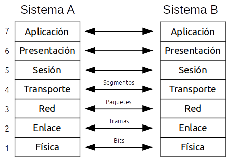
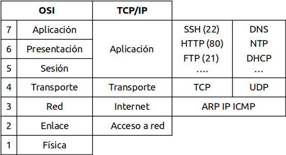
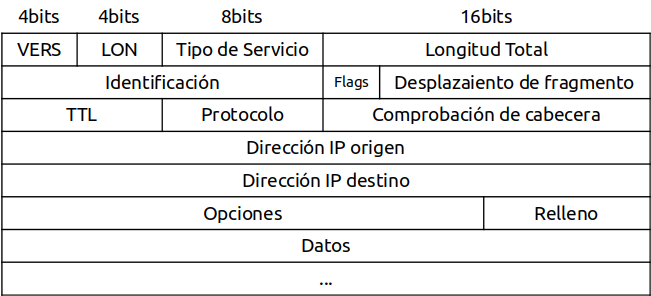
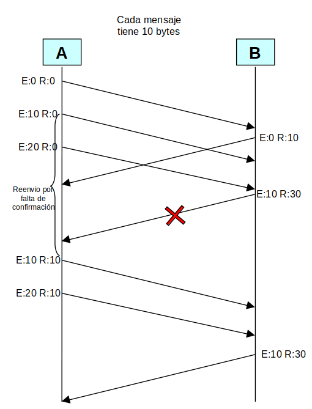
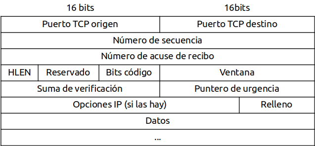
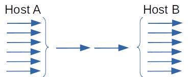
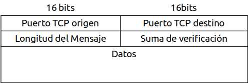

Arquitecturas basadas en niveles¶
Arquitectura OSI¶
En 1983 se completa la migración a la arquitectura de comunicación TCP/IP, en 1978 the Internatonal Standars Organization (ISO) propuso el modelo (OSI) Open Systems Interconections, que al final quedó como un modelo teórico ya que el TCP/IP ya estaba totalmente extendido.
Modelo de referencia OSI
Capa física. En esta capa se encuentra los medios materiales para la comunicación como las placas, cables, conectores, es decir medio mecánicas y eléctricos. La paca física se ocupa de la transmisión de bists a lo largo de un canal de comunicación. Debe de garantizar que un bit que se manda llegue con el mismo valor.
Capa de enlace. Aporta un servicio de transferencia de datos fiable a través del enlace físico para ello tiene que fraccionar el mensaje en tramas de datos. Por otro lado se incluyen un par bits entre los tramos de datos para hacer el control de errores, esta capa se encarga de solucionar los problemas de reenvio, o mensajes duplicados.
Capa de red. Este nivel encamina los paquetes de la fuente al destino final a través de encaminadores (routers) intermedios. tiene que evitar la congestión y manejar saltos cuando la fuente y destino de las redes es diferente.
Capa de transporte. La función principal es aceptar los datos de la capa superior y dividirlos en unidades más pequeñas, para pasarlos a la capa de red, asegurando que todos los segmentos llegan y se re ensamblas los paquetes
Capa de sesión. Permite a los usuarios loguearse entre sí permitiendo accedes a su sistema de tiempo compartido a distancia, o transferir un archivo entre dos maquinas, también puede encargase de recuperar el sistema en el caso de producirse un fallo.
Capa de presentación. Se encarga de traducir la información del formato máquina a un formato que pueda entender el usuario.
Capa de aplicación. es el más cercano al usuario, proporciona servicios como el correo electrónico, acceso a bases de datos, transferencia de documentos, etc
La transmisión de datos en el modelo OSI¶
Cuando un proceso emisor desea enviar datos al proceso receptor, entrega a la capa de aplicación del nivel (7.) donde se le añade la cabecera en la parte delantera de los datos, que se entrega a la capa de presentación y de esa manera prosigue hasta que la capa física. Después de la transmisión de física, la maquina receptora se encarga de hacer los pasos para ir eliminando las cabeceras según las capas que vaya recorriendo la información hasta llegar al proceso receptor.
Arquitectura TCP/IP¶
La familia de protocolos TCP/IP es un estándar aceptado por el mercado, en 1983 termino la migración a esta arquitectura, en 1984 se publico el modelo OSI, que al final quedo como un modelo teórico.
En la arquitectura TCP/IP la capa de red es casi totalmente asimilable a la capa de red del modelo OSI, pero en el caso de la arquitectura TCP/IP la capa de red no se preocupa de las tareas de ordenación de los paquetes cuando llegan a su destino. Esto es lo que se conoce como servicio no orientado a conexión. Cuando los paquetes se tratan de forma independiente, conteniendo cada uno la dirección de destino, se dice que se usa la técnica de datagrama , por tanto, Internet es un red de conmutación de paquetes basada en datagramas.
ARP (Adrees Resolution Protocol) «localiza la dirección lógica de un nodo a partir de la física». cuando un host quiere transmitir un paquete IP, necesita averiguar la dirección MAC del destinatario (dirección de destino en paquete IP) para ello genera un paquete ARP que difunde por toda la red. Solo responde el host que tenga la IP encapsulada en el paquete ARP con otro paquete ARP da respuesta con su dirección MAC
ICMP (Internet Control Mensage Protocol) Envía Mensajes de error en forma de datagrama, Si hay un error en estos mensajes no se reenvían para evitar el efecto bola de nieve. Entre otros mensajes podemos escribir los siguientes : Destino inalcanzable, tiempo excedido, problemas en parámetros,…» (lo utilizan herramientas como ping y tracert)
IP (Internet Protocol), IP es un protocolo encargado de transportar los datagramas o paquetes

VERS: Es la versión del protocolo IP. La versión actual es la 6.
LON: Es la longitud de la cabecera IP de 32 en 32 bits. No incluye el campo de datos.
Tipo de servicio : Es un indicador de la calidad de servicio solicitado por este datagrama IP.
Longitud total : Longitud total del datagrama, cabecera y datos, especificado en bytes.
Identificación : Un número único que asigna el emisor para ayuda a reensamblar un datagrama fragmentado. Los fragmentos de un datagrama tendrán el mismo número de identificación.
Flags : Hay varios flags de control que nos indican información sobre la fragmentación
Desplazamiento de fragmento : Se usa con los datagramas fragmentados. En el primer fragmento este valor es siempre cero.
Tiempo de Vida (TTL) : Es un contador que sirve para limitar la vida de un paquete. Se supone que este contador cuenta el tiempo en segundos, permitiendo una vida máxima de 255 segundos; debe disminuirse en cada salto. En la práctica simplemente cuenta los saltos. Cuando el valor llega a cero, el paquete se descarta y se envía de regreso un paquete de aviso al host de origen. Esto evita que los datagramas vaguen eternamente.
Número de protocolo : Indica el protocolo de alto nivel al que IP debería transportar los datos de este datagrama.
Comprobación de cabecera : Control de errores de la cabecera.
Dirección IP origen (32 bits): dirección IP del dispositivo fuente o emisor.
Dirección IP destino(32 bits): dirección IP del dispositivo destino o receptor.
Opciones : contempla las opciones solicitadas por el emisor, que pueden ser de seguridad, source routing, timestamps..
Relleno : Si se usa una opción, el datagram se rellena con todos los bytes a cero hasta llegar a los 32 bits.
Datos : este campo contiene los datos a enviar, siendo su longitud múltiplo de 8 bits. El valor máximo de la longitud es 65.535 bytes (64 Kbytes). El campo comenzará con el contenido de la cabecera del protocolo de siguiente nivel: TCP o UDP.
TCP (Transmissión Control Protocol). TCP es el responsable de ensamblar los datagramas recibidos por el receptor, ya que la red IP puede desordenarlos al utilizar caminos diversos para alcanzar su destino. IP no garantiza que los paquetes lleguen a su destino es TCP el que se encarga de ellos. Las aplicaciones que usan TCP necesitan sincronizarse para:
 
Iniciar la comunicación: mientras un programa “escucha” otro se conecta
Terminar la comunicación: aunque un sentido de la comunicación esté cortado, el otro puede seguir activo
Saber qué tramas ha recibido el otro extremo, cuales deben volver a enviarse,…
TCP puede enviar varios paquetes sin confirmar (ventana) El otro extremo confirma sólo el último paquete recibido con su siguiente transmisión
A veces se envían paquetes vacíos, sólo para confirmar al otro extremo. Por ejemplo, cuando se lleva un segundo sin emitir nada, pero recibiendo bytes

Puerto origen (16 bits). Puerto de la máquina origen. Al igual que el puerto destino es necesario para identificar la conexión actual. El uso de puertos permite la multiplexación y la demultiplexación
Puerto destino (16 bits). Puerto de la máquina destino.
Número de secuencia (32 bits). Indica el número de secuencia del primer byte que trasporta el segmento.
Número de acuse de recibo (32 bits). Indica el número de secuencia del siguiente byte que se espera recibir. Con este campo se indica al otro extremo de la conexión que los bytes anteriores se han recibido correctamente.
HLEN (4 bits). Longitud de la cabecera medida en múltiplos de 32 bits (4 bytes). El valor mínimo de este campo es 5, que corresponde a un segmento sin datos (20 bytes).
Reservado (6 bits). Bits reservados para un posible uso futuro.
Bits de código o indicadores (6 bits). Los bits de código determinan el propósito y contenido del segmento. A continuación se explica el significado de cada uno de estos bits (mostrados de izquierda a derecha) si está a 1.
URG. El campo Puntero de urgencia contiene información válida.
ACK. El campo Número de acuse de recibo contiene información válida, es decir, el segmento actual lleva un ACK. Observemos que un mismo segmento puede transportar los datos de un sentido y las confirmaciones del otro sentido de la comunicación.
PSH. La aplicación ha solicitado una operación push (enviar los datos existentes en la memoria temporal sin esperar a completar el segmento).
RST. Interrupción de la conexión actual.
SYN. Sincronización de los números de secuencia. Se utiliza al crear una conexión para indicar al otro extremo cual va a ser el primer número de secuencia con el que va a comenzar a transmitir (veremos que no tiene porqué ser el cero).
FIN. Indica al otro extremo que la aplicación ya no tiene más datos para enviar. Se utiliza para solicitar el cierre de la conexión actual.
Ventana (16 bits). Número de bytes que el emisor del segmento está dispuesto a aceptar por parte del destino.
Suma de verificación (24 bits). Suma de comprobación de errores del segmento actual. Para su cálculo se utiliza una pseudo-cabecera que también incluye las direcciones IP origen y destino.
Puntero de urgencia (8 bits). Se utiliza cuando se están enviando datos urgentes que tienen preferencia sobre todos los demás e indica el siguiente byte del campo Datos que sigue a los datos urgentes. Esto le permite al destino identificar donde terminan los datos urgentes. Nótese que un mismo segmento puede contener tanto datos urgentes (al principio) como normales (después de los urgentes).
Opciones (variable). Si está presente únicamente se define una opción: el tamaño máximo de segmento que será aceptado.
Relleno. Se utiliza para que la longitud de la cabecera sea múltiplo de 32 bits.
Datos. Información que envía la aplicación.
{kind=link}
UDP (User Datagram Protocol). Permite la transmisión de mensajes sin la necesidad de establecer una conexión previa, y sin garantías de entrega. Mayor rendimiento que el TCP. Permite al igual que el protocolo TCP la multiplexión por medio de puertos.

El nivel de aplicación.¶
En este nivel se incluyen todos los protocolos de alto nivel que utilizan los programas para comunicarse. En la arquitectura TCP/IP este nivel incluye a los niveles de sesión, presentación y aplicación del modelo OSI.
Algunos de los protocolos de la capa de aplicación son:
FTP: Protocolo utilizado en la transferencia de ficheros entre un ordenador y otro.
DNS : Servicio de nombres de dominio, es el sistema utilizado en Internet para convertir los nombres de los nodos de red en direcciones de red.
SMTP : Protocolo simple de trasnferencia de correo, basado en texto y utilizado para el intercambio de mensajes de correo. Está basado en el concepto cliente-servidor, donde un cliente envía un mensaje a uno o carios servidores.
POP: Protocolo de oficina de correo, se utiliza en los clientes de correo para obtener los mensajes de correo almacenados en un servidor.
SNMP : Protocolo de administración de redes, permite monitorizar y controlar los dispositivos de red y de administrar configuraciones y seguridad.
HTTP : Protocolo de transferencia de hipertexto, es el protocolo utilizado en las transacciones de páginas web. Define la sintaxis y la semántica que utilizan los elementos de software de la arquitectura web (clientes, servidores, proxies ) para comunicarse. Es un protocolo orientado a transacciones y sigue el esquema petición-respuesta entre un cliente y un servidor. Tiene una versión segura que es el HTTPS
Conexiones abiertas: netstat¶
El comando netstat controla las conexiones TCP/UDP abiertas en el sistema
Puertos utilizados, procesos conectados, estado de la conexión,…
Ejemplos
Netstat /?: Ayuda
Netstat -b: Conexiones actuales y el proceso que las maneja en el ordenador
Netstat –a: Conexiones actuales y puertos a la escucha en el ordenador